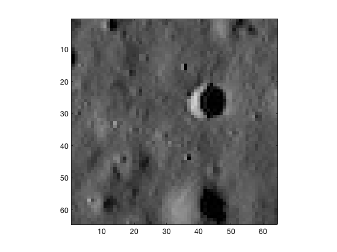
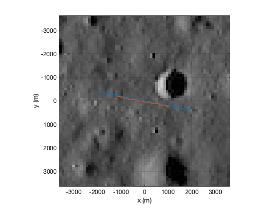

Simulate a lunar overflight
See also: TerrainCamera, NewFig, PlotXYTrajectory, ColorMapGrayScale
Contents
%------------------------------------------------------------------------ % Copyright (c) 2020 Princeton Satellite Systems, Inc. % All rights reserved. %------------------------------------------------------------------------ v = ver; any(strcmp('Deep Learning Toolbox', {v.Name})) n = 500; dT = 0.1; nBits = 16; angle = pi/16; xW = 7142;
ans = logical 1
Load the neural net
nN = load('LunarNet'); rI = load('Loc'); r = linspace(-2000,2000,n); x = [cos(angle)*r;sin(angle)*r]; xP = zeros(2,n); % Put the image in a figure so that we can read it h = NewFig('Lunar Segment'); i = flipud(imread('LROApollo1164.jpg')); image(i); axis image ColorMapGrayScale p = zeros(16,16,3); for k = 1:n % Get the image for the neural net im = TerrainCamera( x(:,k), h, nBits, xW ); p(:,:,1) = im.p; p(:,:,2) = im.p; p(:,:,3) = im.p; % Run the neural net l = classify(nN.terrainNet,p); xP(:,k) = rI.r(:,l); end i = imread('LROApollo1164.jpg'); PlotXYTrajectory([x(1,:);xP(1,:)],[x(2,:);xP(2,:)],i, xW/2,'Trajectory'); ColorMapGrayScale; %-------------------------------------- % $Date$ % $Revision$ 